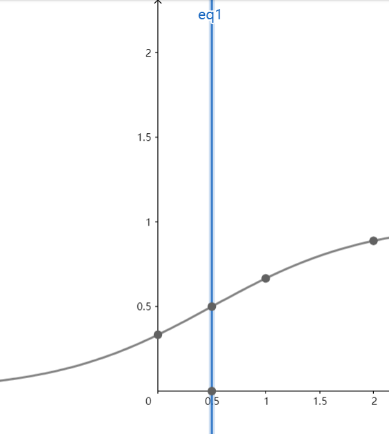
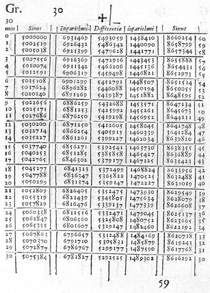
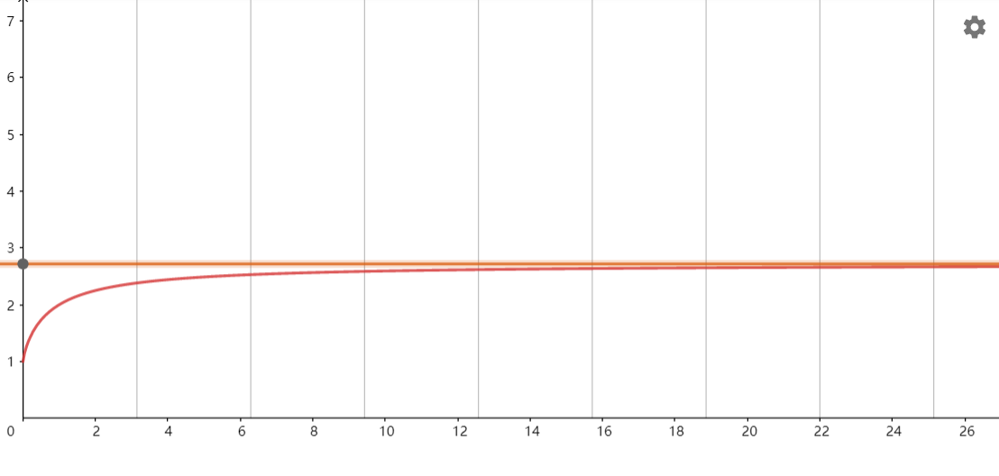
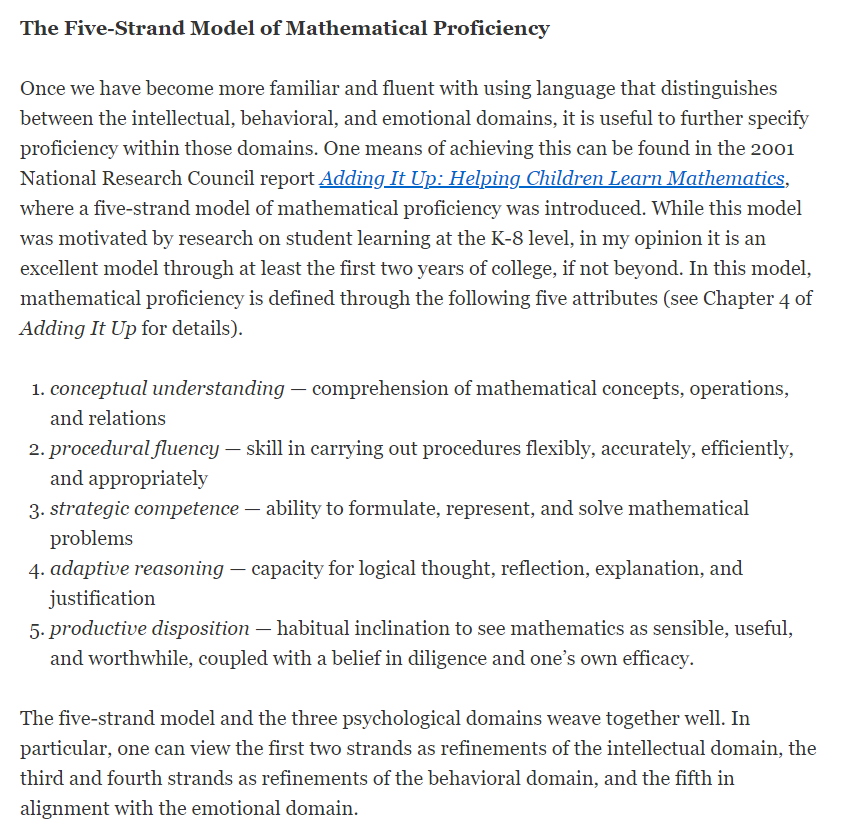

相信大家经过昨天的鸡汤, 已经信心满满, 准备学习.
举个例: \(0.8^{-0.5}~~?~~~0.8^{-0.6}\)
例子: \(2.5^{0.1}~~~~0.9^{3.4}\) \(3^3~~~~\pi^\pi\) .
那么问 \(3^\pi ~~~~ \pi ^3\) ?
想先找几个试试看: $$ 3^4>4^3\\ 2^3<3^2 $$
有点迷惑. 我们不管了.
其实还有一些和上面一样的, \(0.6^{0.6}~~~~0.7^{0.7}\) , 用计算机试试看.
像往常一样, 求定义域, 值域, 单调性, 对称性等等内容.
关于特殊值:
一定要用特殊值?
一定不能用特殊值?
特殊值可以解决一切问题, 认识清楚就可以用.
其实0比1还省事. 就是看看有没有定义.
对称性(contd)
代进去几个试试看, 哦? 也就是 \(f(1/2+x)+f(1/2-x)=1\) .  能推倒吗? 留个悬念.
$$ \begin{aligned} &1 &2~~~ &3 &4 ~~~~ &5 &6 ~~~~ &7 \\ &2 &4 ~~~ &8 &16~~~~ &32 &64 ~~~~&128 \end{aligned} $$
但是Napir的表格是按照第二行排列的. 也就是:
$$ \begin{aligned} &1 &\color{red}? \color{black} ~~ &2~~~ &3 &4 ~~~~ &5 &6 ~~~~ &7 \\ &2 &3 ~~&4 ~~~ &8 &16~~~~ &32 &64 ~~~~&128 \end{aligned} $$
3应该也可以写成这样. 大概是 \(1.x\) .
当然, 他花了20年出版了一本书, 里面就两行数, 很多页. 销量第一.

所以我们就想知道 \(2^?=3\) .
这个工具的诞生使得天文学家的寿命加倍.
我们更关注它的"性质"而不是"结果", 因此我们可以用一个符号来代表它.
"我们给他起一个 \(\log_23\) ". 可以不用写 \(\cancel{\log_2^3}\) . 我们起名字叫做对数.
为什么叫对数?
一些约定: $$ \Huge m=\log_ab\qquad a^m=b $$ 意思是: \(a\) 的多少次方等于 \(b\) ? 那个答案就是 \(m\) .
例如: \(\log_28=?;\log_{1/3}9=?;\log_{27}9=?;\log_{16}8=?\)
有一个奇怪的银行, 它每年的利息是100%. 所以第一年你存了100, 第二年, 你就得到了200元. 能不能这样, 在年中的时候取出来, 然后再存进去, 好像本金就多了, 回报也多了. \(100\rightarrow150\rightarrow225\) 哦, 看上去很好的, 为什么只取一次呢? 一直取, 一直存, 一直取, 一直存...
那么这么干, 100元能变成什么? 真正的收益是... 大约272元.
\((1+1)^2=2\) \((1+1/2)^2=2.25\) \((1+1/3)^3\approx2.37\) \((1+1/4)^3\approx2.44\) ... \((1+1/10)^10\approx2.59\) \((1+1/100)^100\approx2.70\) 这样的函数是 \((1+1/x)^x\) , 增函数, 但是这个数有上限, 一定小于3.
我们认为它有渐近线! 
这个渐近线的 \(y\) 值是几呢? 最早的研究者Euler证明了它是一个超越数. 因此命名叫做叫 \(e= \textbf{2.7}1828459045235360\cdots\) .
其实我觉得应该换一下两个的名字.
(1) 对(废)数(话)恒等式: $$ a^{\log_ab}=b. $$ 一句废话.
这有什么意思? 任何数可以写成任何为底的指数. (用得着的)
比如 \(8=2^3=3^{\log_28}\)
(2) 关于1: $$ \log_a1=0,\log_aa=1 (a>0, a\neq1). $$
(3) 运算 (注意, \(\log\) 的优先级高于乘法, 注意括号!) $$ \begin{aligned} \log_aM+\log_aN&= \log_aMN \\ \log_aM-\log_aN&= \log_a(M/N)\\ \log_a(M^\alpha)&= \alpha\log_aM(真数有指数, 可以往前拽)\\ \end{aligned} $$ 看例子:
但是只能做底数相同的对数. 以2为底和以3为底真的一点没有关系吗?
(4) 换底公式
$$ \log_aM \sim \log_bM $$ 改成指数式, \(a^x=M, b^y=M, a^x=M=b^y\) .
\(b^{\log_b(a^x)}=b^{x\log_b(a)}=b^x\) , 那么 \(y=x\log_b a\) . 哦, 我们就有了 \(\log_bM=\log_aM\log_bM\) . 有点麻烦, 所以我们变形: $$ \boxed{\log_aM={\log_bM\over\log_ba}} $$
快刀切对数. 举几例子.
几个小公式:
上面的还在上面, 下面的还在下面.
太正常了! 我校的一位NOI银牌的同学说:"当时学的时候太难了, 感觉非常震惊."
Ex(5)(6).
什么是 \(e\) ? 推荐微积分的本质!!!
比较通俗易懂, 很好玩.
番外篇: 数学素养(mathematical maturity)的定义
(节选)
